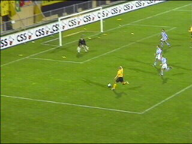

|
Roda JC - De Graafschap (5-0) 26 oktober 2002 |
Indrinksessie Hanebretboys nabij Z16.
Het prachtige mega-doek zeilt over west.
Een nieuwe vlag in Z14.
Bij de aftrap zien we oud-Rodaspeler Dave
Zafarin die zijn staart nog even recht legt.
Een halfuur lang was er weinig te beleven. Roda
deed niks, Graafschap kon niks. Hier een aardige
kans voor de Achterhoekers. Redding op de lijn!
Gerrie Senden verzendt een bal naar het hoofd
van Cristiano die 1-0 scoort (38').
Nadat Van der Kruis geheel onnodig de bal heeft
weggeslagen bij de tweede paal krijgt Roda een
strafschop welke door Anastasiou in de 43e min.
verzilverd wordt.
Een dikke minuut later scoort Soetaers het
mooiste doelpunt van de avond middels een
schitterende volley.

Soetaers die nogal zelfbaatzuchtig acteerde
vanavond schiet op de paal.
De terugketsende bal komt voor de voeten van
Anastasiou die 4-0 scoort (69').
De wave gaat door het stadion.
Filipovic legt de bal panklaar voor Sonko die in
de 76e min. 5-0 scoort.
De Graafschapsupporters kunnen het niet meer
aanzien.
De derde plaats blijft behouden!
Heeft deze man een stok vanwege een overdosis
Baccardi breezer of is hij in Groningen geweest?
Deze superboeren bergen beschaamd hun
blauw/witte vaan op ;-)
Toen er geen bier meer was te krijgen in de KO,
bleek ook nog eens de nieuwe BK gesloten.